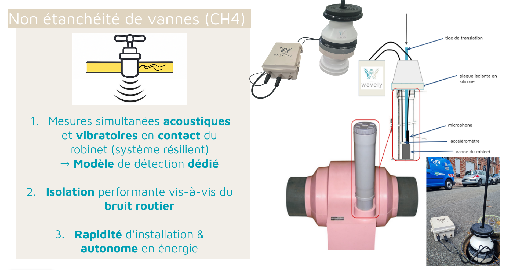
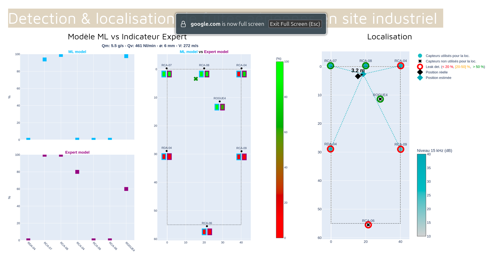
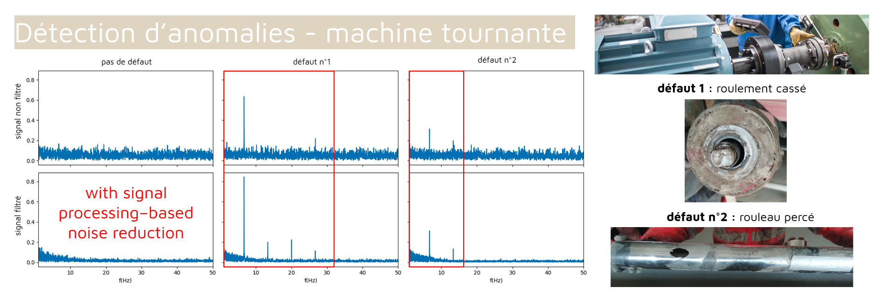
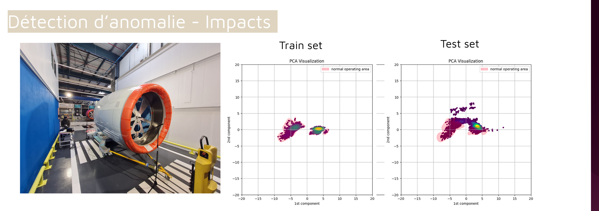
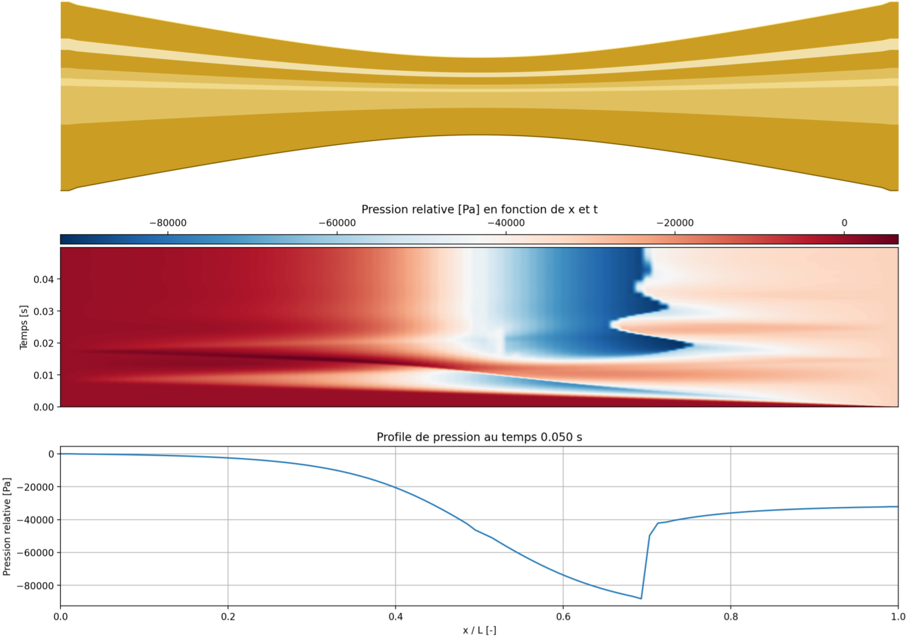
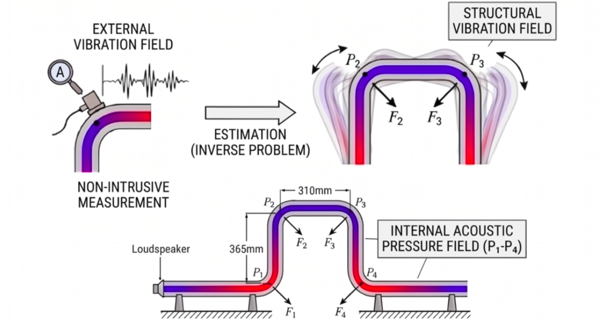
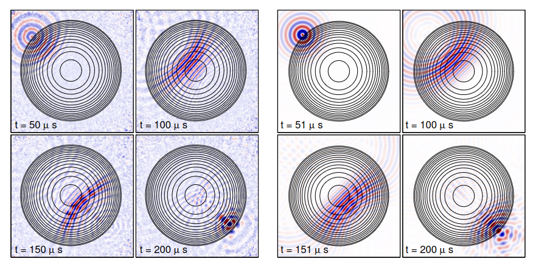

Profil
Docteur en acoustique avec expérience en R&D, modélisation multiphysique et simulation numérique. Expertise en propagation d'ondes, couplages fluide-structure, turbulences, traitement du signal et mesures LASER (PIV). Mon objectif est de contribuer à des projets d'ingénierie à fort contenu scientifique, du modèle physique à la validation expérimentale.
Approche transverse pour intervenir sur l'ensemble du cycle technique d'un produit, alliant expertise théorique et validation in-situ :
Compétences
Domaines d'expertise
Acoustique, vibrations, turbulences, traitement du signal, instrumentation LASER.
Calcul scientifique & Data
Python, Matlab, SQLite, LabVIEW, Excel.
Simulation & CAO
COMSOL, AutoCAD 2D-3D, SolidWorks, OnShape.
Langues & Rédaction
Anglais (très bonne maîtrise écrite et orale), Espagnol (maîtrise écrite convenable). Rédaction technique : LaTeX, Word, PowerPoint.
Expériences professionnelles
Ingénieur R&D - Traitement du signal & Data science
Recherche, évaluation et industrialisation de nouveaux cas d'usage de détection d'événements par capteurs acoustiques embarqués, avec intégration de modèles d'IA pour la détection et la classification.
Gaz leak detection


Anomaly detection


Drone detection & Localisation
Enseignant en Acoustique (Sound Design)
Conception et animation d'un module d'introduction à l'acoustique de 32 heures pour les étudiants en Sound Design (Studio M). Enseignement axé sur la physique du son, les phénomènes acoustiques, la perception & psychoacoustique, l'acoustique des salles et l'électroacoustique.
Post-doctorat — Turbulences
Étude d'écoulements turbulents en soufflerie par mesures LASER (PIV), caractérisation tourbillonnaire et confrontation à des modèles CFD.
LASER-based PIV for Vortex Dynamics & Turbulent Flow Characterization

Ingénieur R&D — Simulation numérique
Modélisation numérique et simulation des écoulements pulsatoires de gaz non linéaires dans les tuyauteries industrielles par schémas FDTD.
Doctorat CIFRE — Acoustique & Vibrations
Direction : J. Gilbert, F. Gautier, A. Pelat.
Sujet : effets non linéaires acoustiques et couplages fluide-structure dans les guides d'ondes, application à des conduites de compresseurs alternatifs.
📄 Consulter le manuscrit de thèse (PDF)
Nonlinear FDTD Simulation of Transient Gas Flows in Piping Systems

Inverse Problem: Pressure Field Estimation Based on Non-intrusive Structural Vibration Measurements

Stages de recherche — Acoustique et propagation d'ondes
- Mars — Juillet 2015, Université d'Édimbourg : modélisation numérique et analyse expérimentale de la propagation non linéaire d'ondes dans les instruments à vent.
-
Juillet — Août 2014, Institut Langevin (ESPCI ParisTech, Paris) : modélisation numérique et analyse expérimentale de la focalisation d'ondes de surface sur des plaques isotropes (phénomène de lentille acoustique).

- Juin 2013, LAM — UPMC (Paris) : développement d'une méthode non intrusive de caractérisation acoustique d'un conduit vocal, pour l'amélioration de talk-box.
Formation
Traitement du signal, mécanique des fluides / aéro-acoustique, vibro-acoustique, opto-acoustique, acoustique non linéaire, acoustique en fluide réel.
Publications et conférences internationales
- Conférence 2023 — ISPIV 2023, San Diego (1er auteur) Vortex interactions between two cylinders in a turbulent boundary layer Lire l'article →
- Conférence 2023 — Forum Acusticum (1er auteur) Nonlinear acoustic modeling in waveguides: from brass instruments to industrial applications
- Conférence 2022 — 23rd Australasian Fluid Mechanics Conference (co-auteur) Turbulent Kinetic Energy Budget and Dynamics of Composed Wakes in TBL
- Journal (MSSP) 2020 — Mechanical Systems and Signal Processing (1er auteur) Inverse identification of the acoustic pressure inside a U-shaped pipeline based on acceleration measurements
- Conférence 2019 — INTERNOISE, Madrid (1er auteur) Estimation of the sound pressure in a bent pipe from non intrusive acceleration measurements by an inverse problem procedure Lire l'article →
- Conférence 2018 — INTERNOISE, Chicago (1er auteur) Low and High Level Acoustic Propagation in Waveguides: Vibroacoustic Coupling in a Bent Pipe at Low Frequency Lire l'article →
- Journal (APL) 2014 — Applied Physics Letters (3e auteur) Experiments on Maxwell's Fish-eye dynamics in elastic plates
Certifications et centres d'intérêt
Certifications : Sécurité LASER (CERLA), Formation H0B0, Permis B, BAFA.
Centres d'intérêt : Musique, basketball, escalade.